Я з Луцька. За своє життя перепробувала купу різних гуртків і секцій. Постійно брала уасть у всяких спортивних змаганнях, тому частенько вдавалось пропустити кілька уроків в школі. Виступала на обласних тунірах, на чемпіонаті України, проте майбутнє вирішила пов'язати не зі спортом, а з творчістю, бо ж не дарма відходила 8 років в художню школу.
Із класу 8 полюбила фотографію і вже кілька років працюю фотографом. Викладу тут паро знімочків зі свого фотографського портфоліо :)
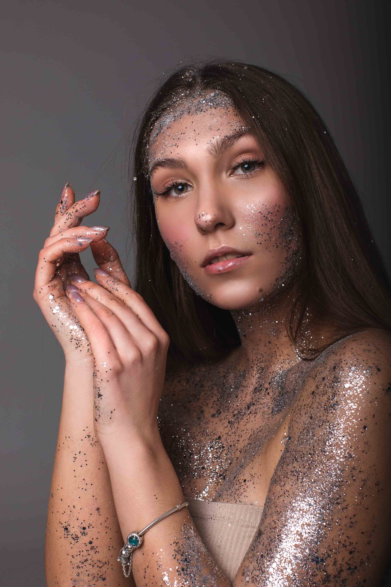 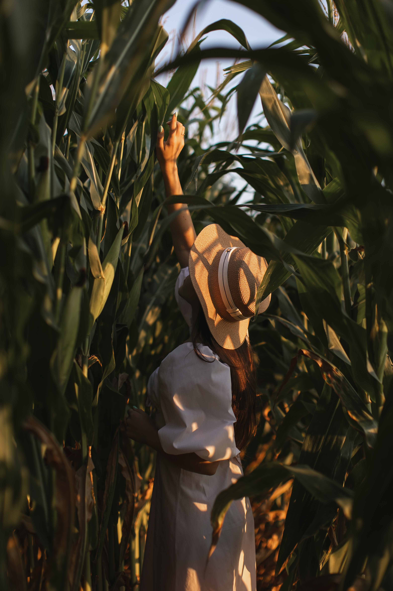 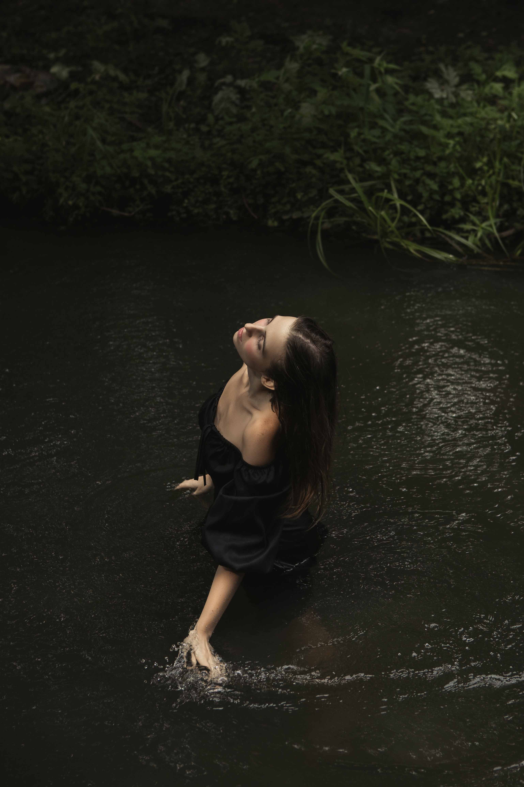
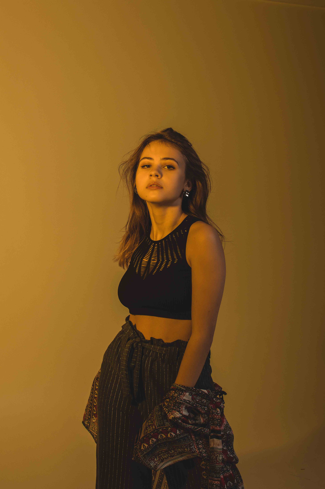
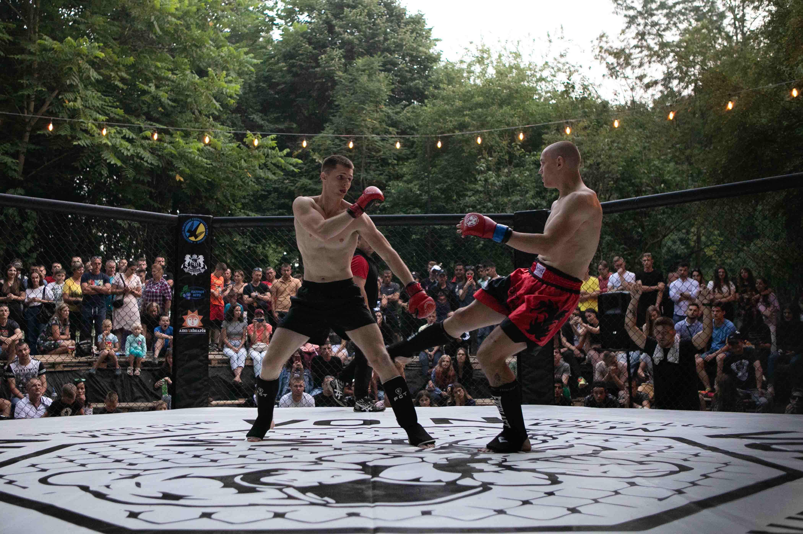
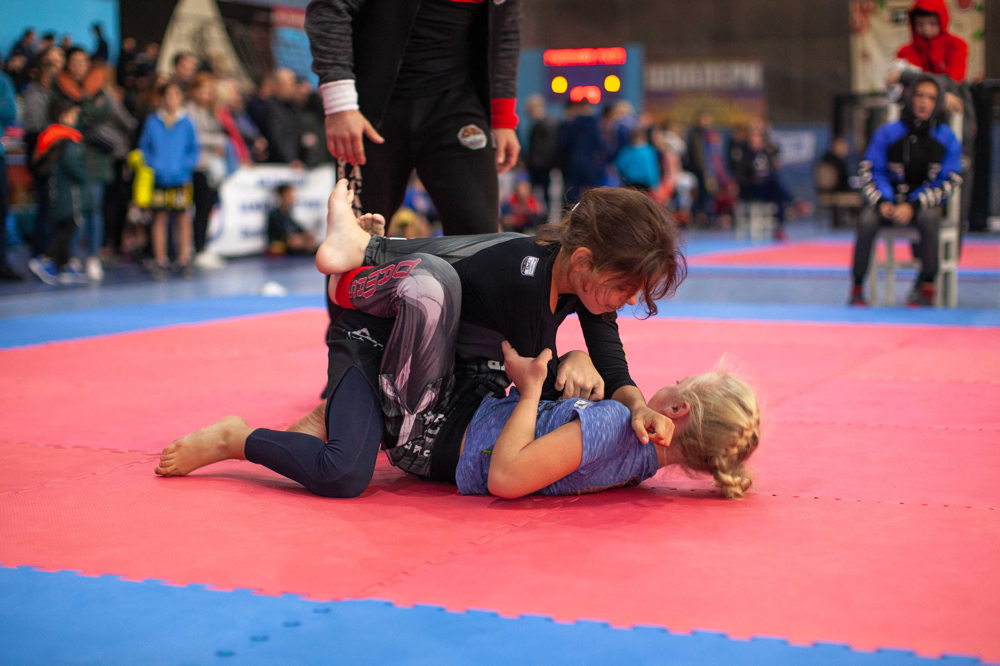
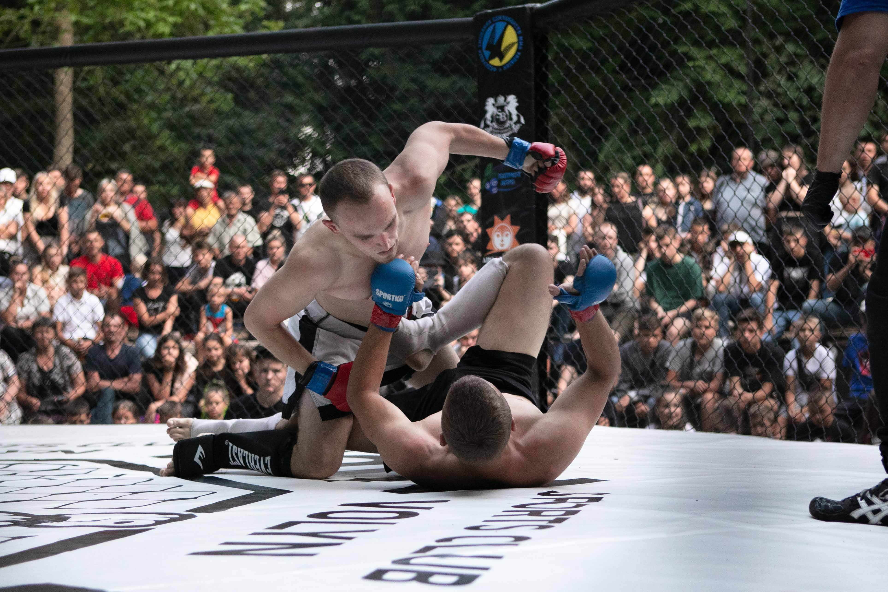
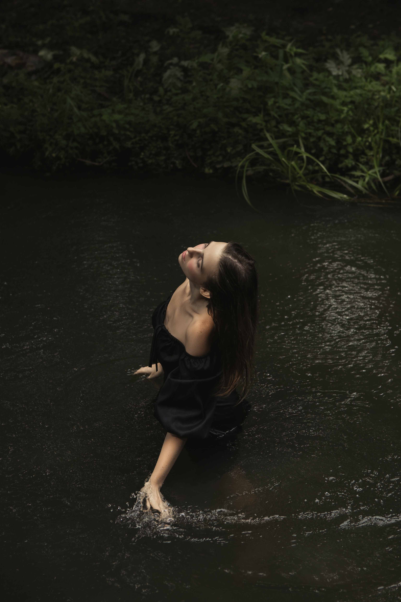
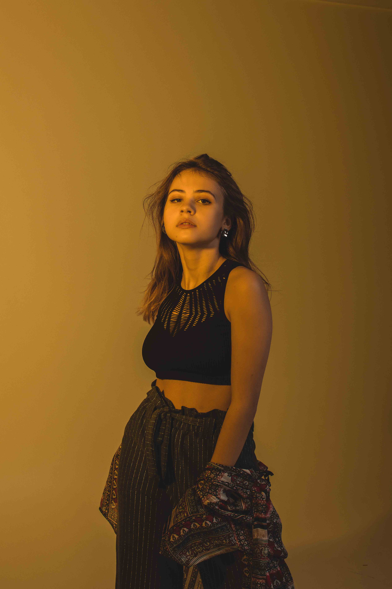
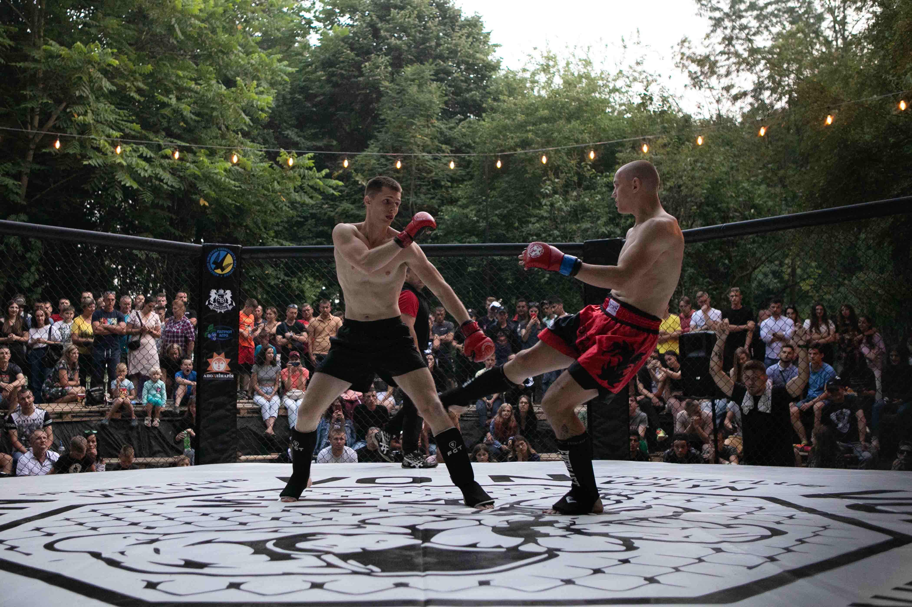
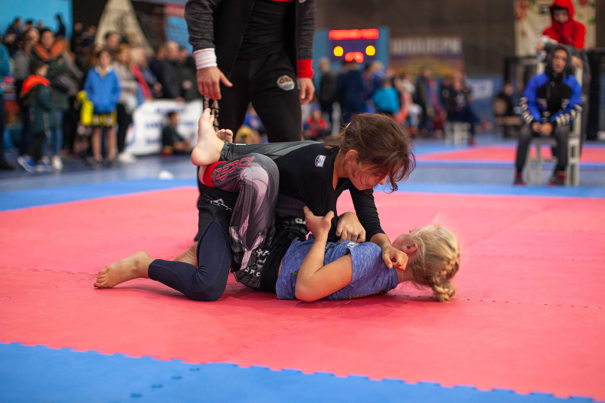
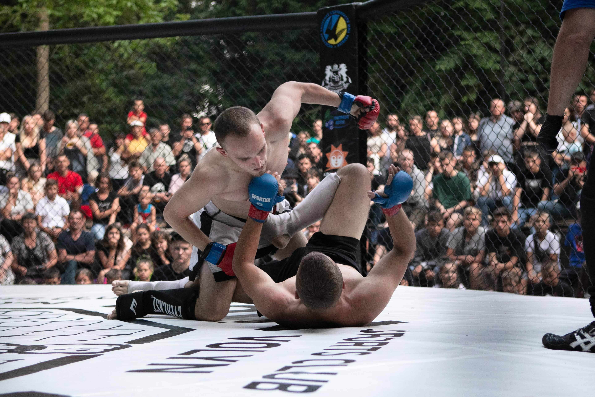